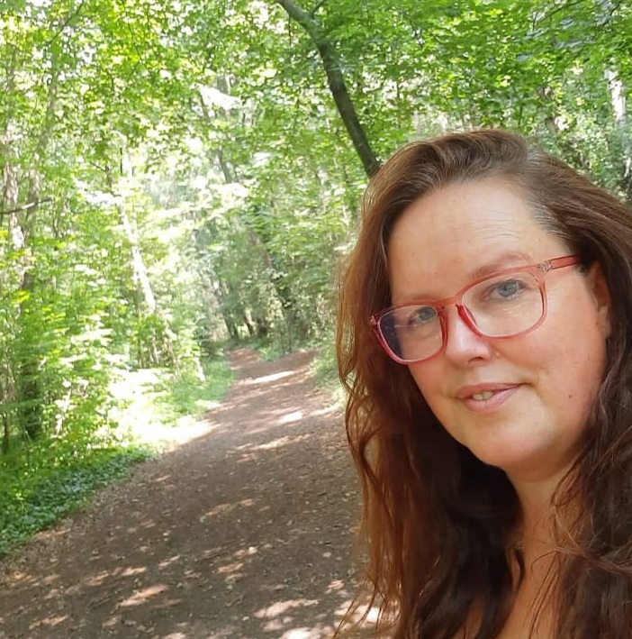

My name is Gail Stewart and I am a passionate childminder with over 8 years experience providing quality care for families. I love spending time outdoors with the children I care for, embracing the great outdoors in the beautiful county of Dorset.

Upton is a safe, residential area which offers a strong community feel. Upton boasts stunning surroundings to explore such as Upton Country Park, Lytchett Bay Nature Reserve and Upton Heath with even more natural beauty at local forests, Parks and Beaches.
I am located just of the A350 for easy access for journeys to or from Poole and Dorchester.
Gail has been fantastic with our daughter. She settled in much quicker than we expected and always comes home happy and full of stories about her day. Gail clearly puts a lot of effort into activities and making the children feel comfortable.
We were really nervous about leaving our son with a childminder for the first time, but Gail made the whole process easy. She’s warm, organised, and keeps us updated on how the day is going. It’s reassuring knowing he’s in such good hands.
Our little boy has been going to Gail for several months now and absolutely loves it. There are always plenty of creative activities and outdoor time, and we’ve noticed a big boost in his confidence.
Gail provides such a welcoming and caring environment. Communication is great and we always know what our daughter has been up to during the day. We wouldn’t hesitate to recommend her to other parents.